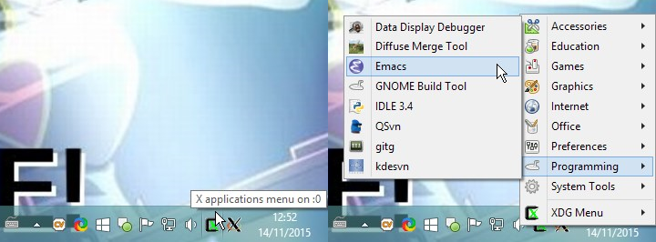

You can start X clients for display on your X server by:
Right-clicking on the "X applications menu" icon in the notification area, and choosing from the menu.

Note: The alacarte package may be installed to edit the menu via Preferences->Main Menu, or XDG_MENU_PREFIX="xwin-" alacarte from a terminal.
Similarly, for other menu editor applications e.g. mozo.
Running the client from a Cygwin shell, e.g.
$ xterm & |
Note: When starting from X clients from a shell, it may be necessary to ensure the
DISPLAYenvironment variable is set correctly. This step is not necessary if you are entering your commands into an X terminal, as DISPLAY must already be set in that case. e.g. in a bash shell:
$ export DISPLAY=:0.0